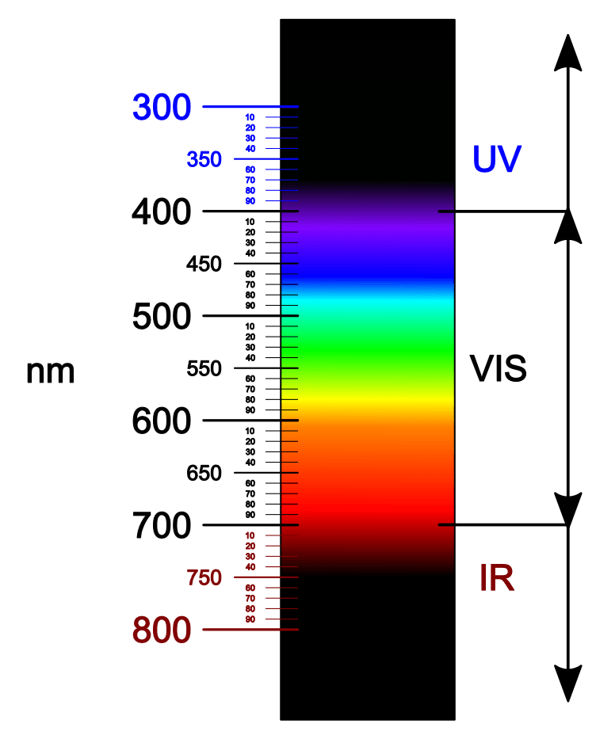

|
La luce è un'onda elettromagnetica che si propaga nello spazio e ci permette
di vedere gli oggetti intorno a noi. La lunghezza d'onda è la distanza tra due
punti consecutivi di un'onda, che determina la sua frequenza e il suo colore.
I colori sono una caratteristica della luce visibile. La luce visibile è una
parte dello spettro elettromagnetico che include i colori dell'arcobaleno, dal
rosso al violetto. Ogni colore ha una lunghezza d'onda specifica.
Il rosso ha la lunghezza d'onda più lunga e il violetto ha la lunghezza d'onda
più corta. I colori intermedi, come l'arancione e il giallo, hanno lunghezze
d'onda intermedie.
Quando la luce colpisce un oggetto, può essere riflessa, rifratta o assorbita.
La riflessione e la rifrazione causano cambiamenti nel colore della luce, mentre
l'assorbimento fa sì che il colore dell'oggetto sia percepito dall'osservatore.
La percezione dei colori dipende dall'intensità della luce e dalla lunghezza
d'onda specifica.
|
 |